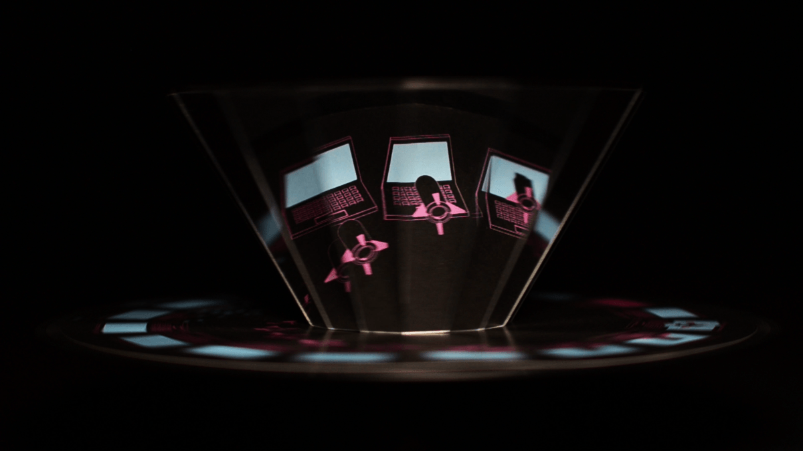
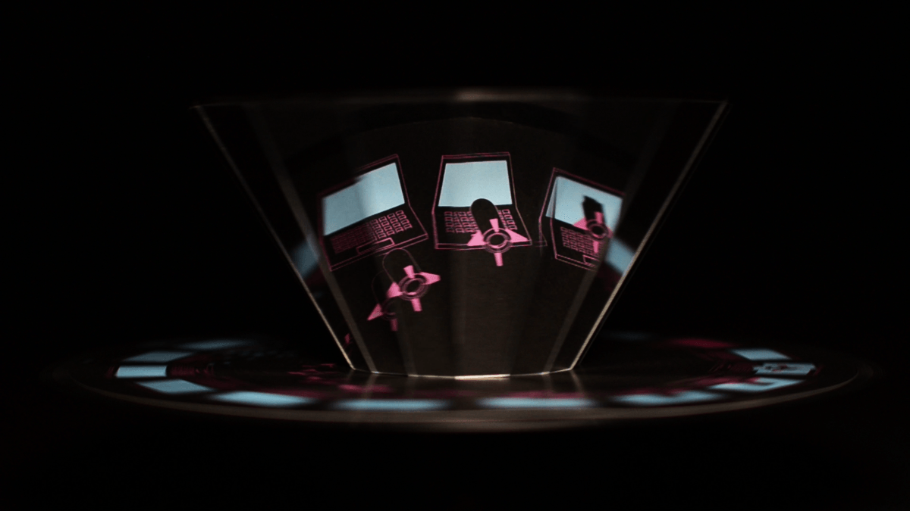

The Space Between the One & Zero / Live Animation Installation
Branding, UI Design, Animation

 

The Space Between The One & Zero is a live animation exhibition and media design project that showed as part of the 2017 Adelaide Fringe Festival. The project explores the relationship and influence of technology on humans with the use of late 1800s live animation machines called Praxinoscopes.
Praxinoscopes consist of spinning discs containing a series of still images beneath a faceted mirror prisms. As the discs rotate, images are reflected in succession in the mirrors, creating the illusion of animation.
This project involved the creation of 3D digital animated assets, which were then exported as 2D images and printed onto 12 frame discs. Concepts range from online surveillance, human cyborgs, digital currency and cyber warfare, and aim to engage the viewer in playful and unexpected ways.